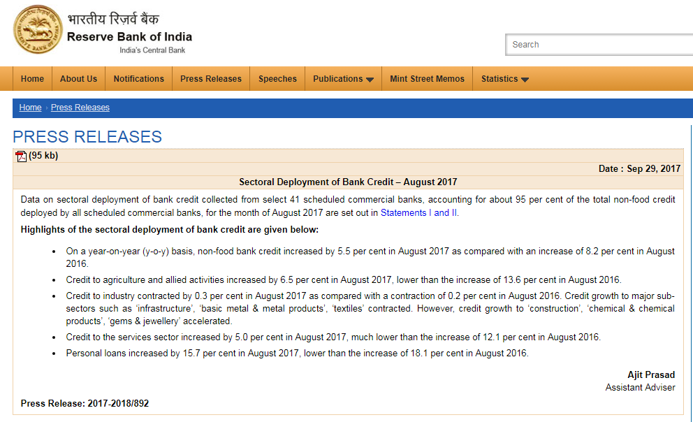
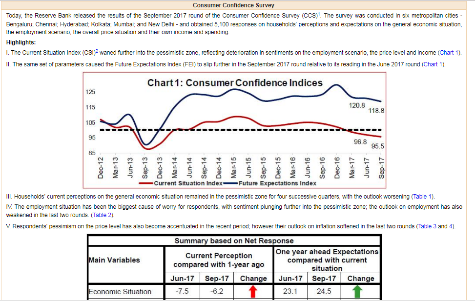
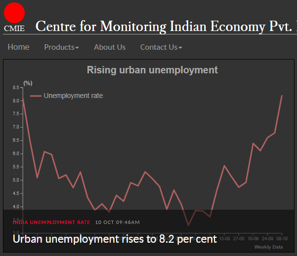
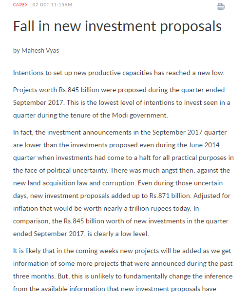
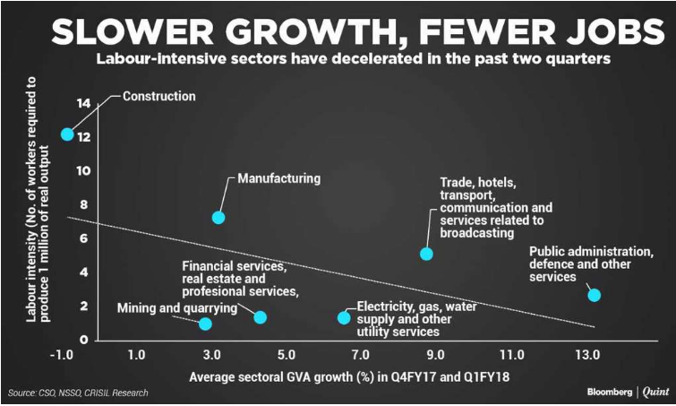
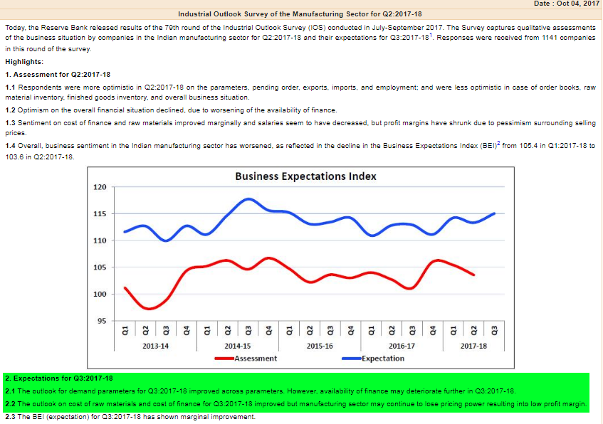
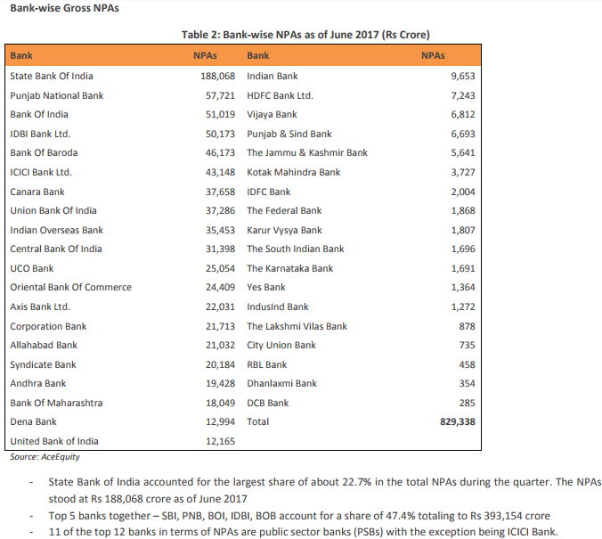

Here is a step by step guide on how to analyse the Indian economy:
1. PSU BANK CREDIT
Banks hand out loans for food and non-food purposes. Food credit is given to food procurement agencies like FCI to buy food stocks from farmers. This should not be taken into account because agricultural loans are analysed separately.
Non-food credit is given to the industries and services sector and for personal loans (car, jewellery, etc.). This credit is one of the clues to the economy.
On this page, go to the DATA ON SECTORAL DEPLOYMENT OF BANK CREDIT section, which is uploaded monthly.
On this page you can go to the latest data to figure out the trends. Let’s read what it says:

(all figures for August 2017)
- The rate of increase in non-food credit is lower than last year (5.5% vs 8.2%)
- The rate of increase in agricultural credit is also lower than last year (6.5% vs 13.6%)
- Though credit to industry is contracting, sectors like jewellery, construction and chemicals are doing well because credit to these sectors has increased.
- The rate of increase in services credit is also lower than last year (5% vs 12.1%)
- The rate of increase in personal loans is also lower than last year (15.7% vs 18.1%)
As you can see all parameters except for 2-3 sectors are in the negative. Remember that even a small contraction in terms of percentage can work out to a substantial sum (in thousands or lakhs of crores) and can inflict a massive blow on the economy.
As a side note, stock pickers should note that cement, gems and jewellery stocks and chemical stocks would generally do well even as the economy suffers.
Actually, all should be in the positive because August is the beginning of the festive season. Secondly, interest rates are down but people are not borrowing — another bad sign as on August 2017.
Though we have not considered private bank data, it will be safe to assume that Private bank data will be more or less on the lines of PSU Banks. In fact PSU bank data is a better representation of the economy because private banks are mostly present in urban areas.
2. CONSUMER CONFIDENCE
Here too the RBI helps out.
Open the RBI Statistics page and head to the Consumer Confidence Report (Quarterly).
The consumer confidence index is measured in 6 Indian metros. If the urban folks spend, it’s a no-brainer that the industries, services and rural folks will feel the consumption effect, or vice versa.
As you can read on the link above, all parameters were down and worsening as on August 2017.

So far, we have seen that credit growth is contracting and consumer confidence is dropping. Both negative as on August 2017.
3. UNEMPLOYMENT
Well, for this statistic, we have to rely on Center for Monitoring of Indian Economy (CMIE), a private body. CMIE does a thorough survey (lakhs are included in a representative sample), follows a scientific methodology, and their findings are mostly on the ball.
According to the data as on 10 October 2017, CMIE reports that urban employment is rising.

Unemployment has a devastating impact on the economy. Out-of-job people migrate back to their towns/villages, some start a business, spending goes down impacting GDP and demand, increasing idle capacities, and it does have a negative social impact too.
4. PRIVATE INVESTMENTS
It’s a no-brainer that when unemployment is rising and demand is lagging, some percentage of manufacturing capacities will remain idle. Now, when capacities are not fully utilized, no private investor will pump in money for expansion.
You can get this data from the CMIE (link above). The data that it has put out on 2 October is pessimistic.

Now, at this point, you must know that there are two engines of growth – private and government investment. I do not have figures of both these separately, but given the idle capacities, it is safe to assume that most of the new investment is by the government.
5. PRIVATE SECTOR PROFITABILITY
This parameter was in the green, even though bank profitability took a hit. The data was voluminous and though things looked good, the figures have not resulted in investment in new capacities, which is a key employment generator. What the numbers imply is that companies are increasing employment either by employing the same number of staff or are somehow optimizing costs, maybe by sacking existing employees (if we correlate the unemployment numbers).
6. SOCIAL EQUALITY
No country can progress unless all sections of the society get a chance to progress. To determine whether the lower strata (namely the labour sector) of the society is doing well, you have to rely on Google.
I Googled “labour intensive sectors data crisil” and got this data

Needless to say, it is not a pretty picture and the government must do something to kickstart labour employment.
7. INDUSTRIAL OUTLOOK
RBI publishes a quarterly Industrial Outlook Survey every quarter. It compares the actual things at the ground level with the industry expectations. Typically when things are good, the assessment line rises and the expectation line drops.
However, as per the RBI, things are not rosy at the moment. pay attention to the section I have highlighted.

8. BANK NPAs
To get this data, you must Google words to this effect: “npas per bank data india CARE”
I got this invaluable CARE report that says Bank NPAs worked up to a whopping 8.42 lakh crores as on 30 June 2017 and that top PSUs were the main culprits (in terms of owning the highest % of NPAs).

If bank NPAs keep climbing, it can be bad tidings for the economy, implying that borrowers are unable to repay loans for whatever reason.
9. FISCAL DEFICIT
You already may know that the fiscal deficit arises when the government’s expenditure exceeds its revenue. Every government sets a deficit target and exceeding that target is considered as bad financial management by investors, Indian and foreign.
Fiscal deficit is widely discussed on TV biz channels and doubtless you know the numbers.
For those who are unaware, India’s fiscal deficit is at 96.1% of target in the first five months of the year. This may be because the government has frontloaded expenditure, but it does imply that the government has very little left to spend unless it throws caution to the winds and announces a fiscal stimulus.
Given the way things are unfolding, I predict a fiscal stimulus is coming our way.
SUMMING UP
This is by and large how you should analyze the Indian economy. While it is true that things are bad today, and that a couple of quarters down the road may be painful, we should take heart from the fact that there will be sunshine going forward.
The state of the Indian economy is one reason why I suggest that staying light and booking small profits can prove to be an effective strategy.
Keep visiting the sites above to keep tabs on the Indian economy and I’m sure stock pickers will get many clues on sectors that are doing well in a downturn and sectors that may do badly when the economy starts firing up.
Feature image borrowed from: VCC Circle
GOOD PLUS INFORMATIVE
VERY GOOD PLUS INFORMATIVE. THANKS
Sir, really a very great insight….got some new parameters to follow and interpret them logically. Thanks a lot for great guidance.